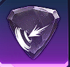

Boss Slayer
- Your damage dealt to Bosses increases by 12%, but the cooldown of you Dash increases by 20%.

Blessing Stones
- When attacking an enemy who has 70% or less of thei HP, the damage you deal increases by 8.4%.
- Your skill cooldowns will all decrease by 12%.
- The power of the [Break] effects you apply to your enemies increase by 18%.
- The damage you deal to targets affected by the [Break] effect increases by 18%.
- Your damage dealt to Bosses increases by 12%, but the cooldown of you Dash increases by 20%.
- When your attacks hit, your Attack increases by 3% for 10 seconds, but the Attack of the target that was hit also increases by 3% (stacking up to 4 times).
Skill Runes
- Fire damage
- Almighty Break
- Airborne
- When this skill is used, increases Ciritcal Hit damage by 50% for 5 seconds.
- Wind damage
- Almighty Break
- Knocks Down
- When this skill is used, increases the target's damage taken by 10% for 12 seconds.
- When using this skill, increases the damage of Vertical Arts by 20% for 10 seconds.
- Fire damage
- Airborne
- Damage dealt to Bosses and Elite Monsters increases by 75%.
- Light damage
- Heavy break
- Knocks down
- When this skill is used, increases Critical Hit damage by 30% for 10 seconds.
- When this skill hits, it resets the cooldown of "The Commander's Touch"
- Depending on the number of targets this skill hits, increases damage dealt to Normal Monsters by 15% (Up to 10 targets).

- Knocks down
- When this skill hits, resets cooldown (Cooldown: 30 seconds).
- When this skill is used, increases Critical Hit damage by 30% for 12 seconds.